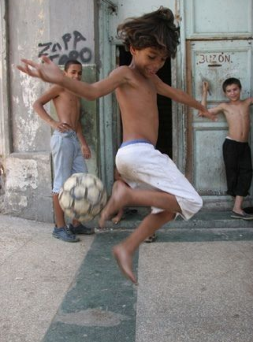

estamos fazendo isso por quê?
A partir da proposta de tema geral, brasilidades, começamos a debater diversos temas nunca chegando em um consenso final. Com isso veio a ideia: fazer mais de um tema. Até porque do que adianta se prender a apenas um se podemos abordar diversos aspectos da proposta? Agora só faltava decidir quais temas iriamos abordas, e para variar a indecisão recomeçou, no final tendo como resultado três assuntos: Culinária típica,Música brasileira e por fim cinema.
Tópicos esses escolhidos por conta da grande gama de assuntos possíveis a serem abordados, aspecto esse que no final se encaixou perfeitamente no nosso plano tendo em vista que vamos obters uma maior liberdade criativa na hora de criar a dinâmica da oficina.